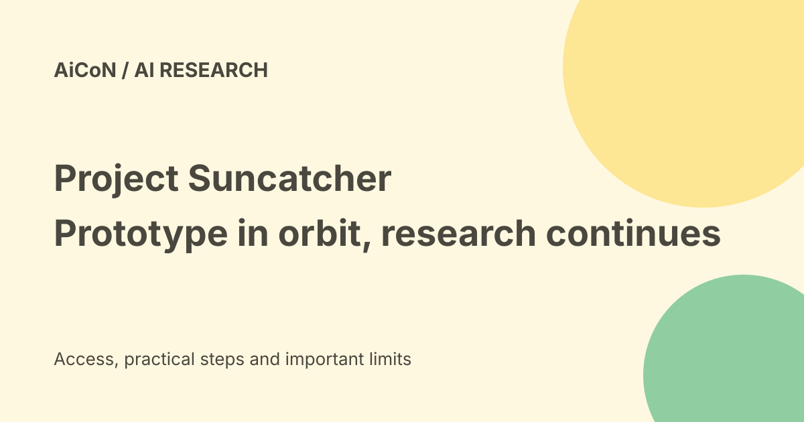

Google Project Suncatcher: prototype in orbit, research limits and next steps
Google says its Project Suncatcher prototype satellite launched into orbit on 1 October 2026. The earlier post said the launch was next week. That wording is now stale. This is an early research mission, not a public space-based AI service.

What changed?
Google's 1 October update says the prototype, built with Planet, launched aboard SpaceX's Transporter-18 mission. It says the team confirmed contact and the satellite was operating as expected.
This is Google's mission report. It establishes the company's reported launch and contact status, not a completed independent assessment of every experiment.
What is Project Suncatcher?
The project explores whether space could eventually host scalable machine-learning infrastructure. Machine learning is the computing behind many AI models.
The long-term idea includes satellite constellations linked by high-bandwidth lasers. The initial satellite is a test toward that vision, not an operational replacement for terrestrial data centres.
What are TPUs?
Tensor Processing Units, or TPUs, are Google's chips designed for machine-learning workloads. The September background article discusses testing Trillium TPUs.
The mission seeks data on physical launch stress, radiation and thermal extremes. Getting a chip to orbit is different from proving that a large distributed AI service can run reliably there.
Why sunlight matters
Google says low-Earth-orbit satellites can access near-constant sunlight and generate up to eight times more solar power than on Earth.
This is a stated opportunity under the project's assumptions, not a guarantee that every satellite gets eight times the usable energy or that space compute is automatically cheaper.
The engineering problems
The September explanation identifies strong launch vibrations, radiation and cooling in vacuum. Vacuum means heat cannot be removed by ordinary air flow as it is in a room.
The project must also evaluate reliable operation and communication. A promising lab result does not settle cost, maintainability or fleet-scale performance.
Lab radiation tests
Google says it ran AI workloads during proton-beam tests at UC Davis's Crocker Nuclear Laboratory. It reported tolerance of a total ionizing dose greater than expected over a five-year space mission.
That is a vendor-reported pre-launch result. Total dose tolerance is not the same as proving immunity to every space event, error or failure. The orbital test exists because some conditions need real flight evidence.
Current versus future evidence
The October update says the team will gather in-orbit data over the following weeks. It does not publish a complete mission results dataset in that short update.
The September article describes a next milestone targeted for 2027. A target is not a guaranteed launch date or a confirmed commercial-service opening.
India and free-versus-paid verdict
No consumer download, Indian public-access programme, cloud price or free compute allocation is established by these announcements.
A student in Kerala can follow the public research, but should not mistake a satellite mission for an AI service to register for. No app, paid account or experiment was operated for this guide.
How to follow the research
- Read the dated launch update rather than an older future-tense headline.
- Separate lab tests from orbital measurements.
- Look for published results and their limitations.
- Distinguish a research milestone from a commercial offer.
- Check the actual paper before repeating a technical conclusion.
The update says a peer-reviewed paper is available in Joule. This guide did not inspect that paper, so it does not claim to independently validate its methods.
What changed since the original post?
The prototype is now reported in orbit, with contact confirmed by Google. The future-tense launch headline is replaced with that dated status. Commercial use and large constellations remain a research vision.
Frequently asked questions
Can I use a space-based Google AI service now?
No such public service is established here.
Have all flight tests finished?
The October update says data gathering will continue.
Is 2027 a guaranteed commercial launch?
No. It is a stated research milestone.
Sources: Official October orbital update · Official September background and lab tests. Checked 7 October 2026.